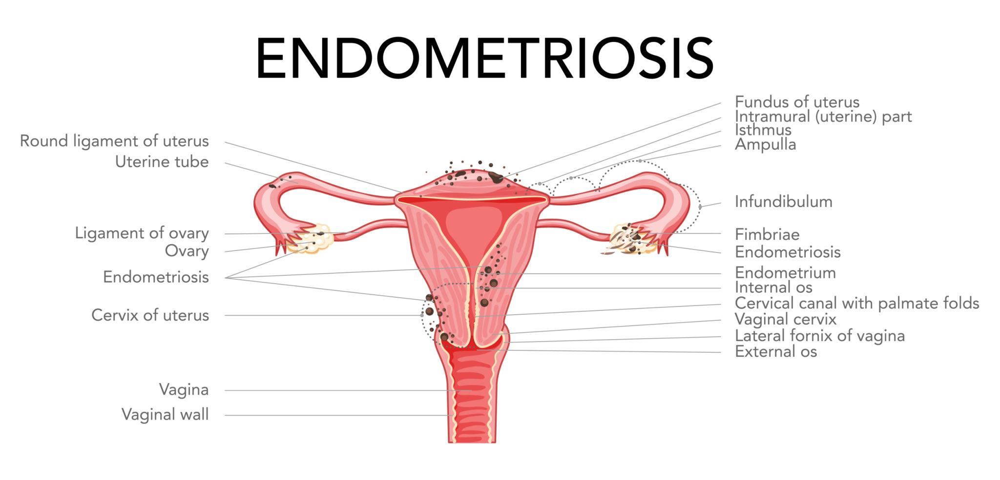

What is endometriosis?
Endometriosis occurs when tissue resembling the endometrium (uterine lining) develops on the ovaries, fallopian tubes, outer surface of the uterus, or pelvic lining. Each month this tissue responds to cycle hormones, causing local inflammation and scar tissue (adhesions).

Recognising symptoms
Severe period pain is often brushed off as normal, which can delay diagnosis by years. Track your symptoms closely if you notice any of the following:
-
Debilitating period & pelvic pain Maumivu makali ya hedhi na nyonga
Cramps that start before bleeding, disrupt school or work, or persist throughout the month in the lower back and pelvis.
-
Pain during or after sex Maumivu wakati au baada ya kujamiiana
Deep internal pelvic discomfort during or following intercourse.
-
Bowel, bladder, & energy symptoms Dalili za tumbo, kibofu na uchovu
Painful bowel movements or urination during periods, heavy bleeding, bloating, persistent fatigue, or difficulty conceiving.
Diagnosis & treatment options
How doctors diagnose it
Evaluation starts with a detailed symptom history and pelvic exam, followed by ultrasound or MRI to check for ovarian cysts (endometriomas). Keyhole surgery (laparoscopy) remains the definitive way to confirm small lesions.
Managing symptoms
Treatment combines anti-inflammatory pain relief (such as NSAIDs), hormonal therapies (pills, progestogens, hormonal IUDs) to quiet lesion growth, pelvic physiotherapy, or laparoscopic excision surgery when needed.
Preparing for your appointment
Bring a two-month symptom diary noting pain severity, cycle dates, bleeding volume, and any painkillers you take. Clear notes help your clinician recognise patterns faster.
Endometriosis questions
No. Severity varies widely, and many women with endometriosis conceive naturally or with medical fertility support. Early care helps protect reproductive plans.
Not always. Many patients find meaningful relief through hormonal management and pain care alone. Surgery is typically considered if symptoms persist despite medication or if deep lesions affect organs or fertility.